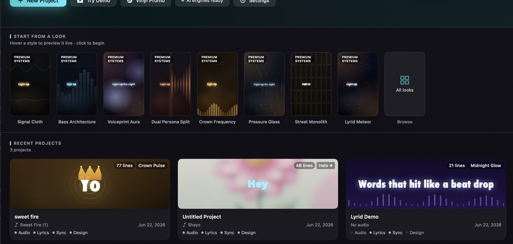
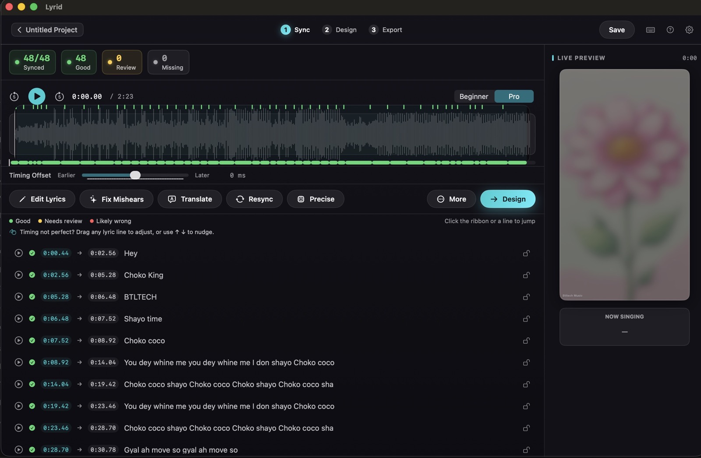
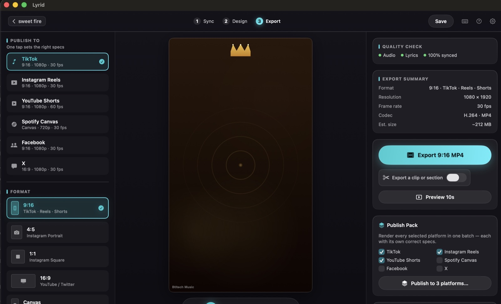
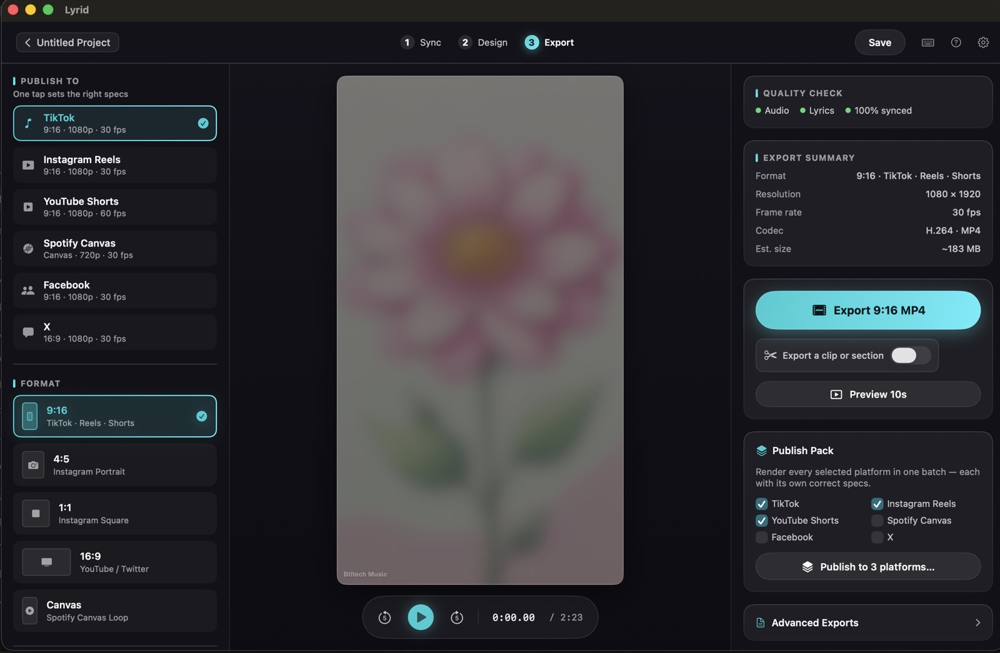
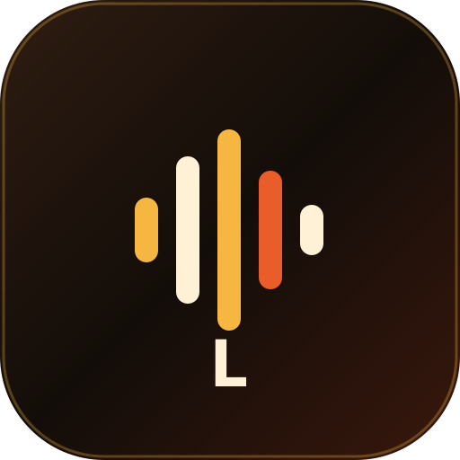

Automatic word-by-word sync
Lyrid listens to your track and times every line and word to the beat. Fine-tune anything by dragging.
AI Lyric Video Maker · Mac
AI lyric videos, made on your Mac.
Drop in your song, add your lyrics, and Lyrid times every word to the beat — then turns it into a polished video ready for TikTok, Reels, Shorts, YouTube and Spotify Canvas.
Apple Silicon Mac. macOS 14 or later. £24 launch founders price. £29 standard. No subscription.

Overview
Lyrid is a lyric video studio built for musicians, producers and labels who want their words on screen and their releases everywhere. Instead of spending hours in a video editor lining up text by hand, you bring in your track, add your lyrics, and Lyrid syncs each line — and each word — to the music for you.
From there you choose a look, fine-tune the style, and export in every format the platforms want. Everything runs on your Mac, so your unreleased music stays private and your exports are yours to keep.
Features
Benefit-led tools for fast, private, platform-ready music visuals.
Lyrid listens to your track and times every line and word to the beat. Fine-tune anything by dragging.
Paste your exact words for perfect spelling and slang, or have Lyrid draft lyrics from the audio.
Clean captions, cinematic looks, club energy, street styles and more — apply a design in a tap.
Text pulses, glows and moves with the music so your lyric video feels alive instead of static.
Use your own typefaces, brand colours, photos or videos to match your visual identity frame to frame.
Cut a hook, verse or teaser into an 8-to-30-second vertical clip with smooth fades.
Export 9:16, 1:1, 16:9 and 4:5, or render every platform size at once with the publish pack.
Your audio is processed on your Mac and never uploaded, so unreleased songs stay yours.
Buy once and own it. £24 launch founders price, then £29 standard. No subscription.
After engine setup and licence activation, lyric-video work can run locally without uploading your audio.
How It Works
Import the audio and paste your words, or let Lyrid draft lyrics from the track.
Lyrid times the lyrics; you pick a look, adjust the motion, and make it yours.
Render for every platform size and post it everywhere.
In The App
A look inside the current Lyrid workflow on Mac.



Who It's For
Creators
Teams
Get Lyrid
Request access to try Lyrid free with a small watermark. Activating your licence removes it. Launch founders price is £24, with standard pricing at £29.

Requirements
Lyrid runs on Apple Silicon Macs and is designed for artists who want a private, local lyric-video workflow without sending unreleased music to a web service.
FAQ
Lyrid is a Mac app that automatically turns a song into a synced, animated lyric video ready for social platforms.
No. Lyrid syncs the lyrics for you and gives you ready-made looks — you pick a style and export.
TikTok, Instagram Reels, YouTube, YouTube Shorts and Spotify Canvas, with vertical, square, widescreen and portrait sizes.
Yes. Paste your exact lyrics for perfect wording, or let Lyrid transcribe them from the audio.
You can try Lyrid for free with a small watermark; activating your licence removes it.
No. Your audio is processed on your Mac and never leaves your computer. Lyrid may use the network for first-run engine/model setup, licence checks, optional anonymous diagnostics, and optional text helpers if you connect them.
Yes, after setup. Lyrid may need the network for first-run engine/model setup and licence activation, but the lyric-video workflow runs locally and your audio is not uploaded.
No. Lyrid is a one-time purchase. Launch founders price is £24, with standard pricing at £29.
An Apple Silicon Mac running macOS 14 Sonoma or later.